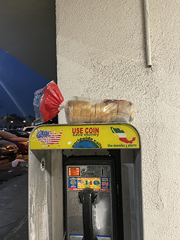

This image is interesting because it is probably something that most people have not seen, or even know about. Something you may not know just from looking at the image is that you have to hike 3 miles to actually see Delicate Arch, which is what is pictured in the stamp. This image relates to the topic of my archive, because my collection is a lot of the stamps I have collected while visiting various National Parks. This collection says something about me because it gives some background on the places I've been to, and what kind of places I often travel to compared to other travelers. It also gives an idea on exactly how long I've been visiting parks like this, because the stamp includes the date that I visited the park.

Fig 2. — Alex Jr Chau
From looking at my partner's image, it appears to be a photograph of a loaf of bread on top of a telephone box. The telephone box has an image of the US and Mexico, advertising the ability to call worldwide for cheap. The setting looks like it was taken at night near a parking lot, but it is unclear exactly what the image is about. The interesting aspect of the image is the subject, because it is not something commonly spotted and the most mysterious aspect of the image is the countries with their flags on the telephone box design because it makes me curious about where this image was taken, why, and what kind of collection this image would be a part of. The most obvious aspects of this image is what is pictured in the image, such as the bread and the telephone box.
Journal 3 — Visual Thinking Strategies Research
The article 10 Intriguing Photographs to Teach Close Reading and Visual Thinking Skills discusses how using imagery can increase visual interaction and critical thinking skills. I agree with what this article presents, because as someone who has had experience reading long articles, I find it easier to engage with the content when there are visuals to help break long blocks of text while still staying relevant to the topic. These visuals can include images as well as graphics or even statistics presented in a graph or table. When these elements are made interactive depending on the user's interactions, it sparks curiosity and influences the user to stay longer on the page in order to further explore these interactions. An example of an interactive website I found is Lusion, which is a digital production studio. Their website is extremely interactive based on the user's cursor and scroll activity, and even without knowing much about the website's purpose, I believe it is very successful in keeping the user on the page. When first encountering this page, I scrolled up and down multiple times as well as used my cursor to play with the effects on the page. The website is very engaging throughout the page and allows the user to dive into specific pages for more information on certain projects. I believe visuals like this are important because it can also engage people who are more visual learners to have the opportunity to learn using the method that is best suited for them to receive and retain new information.
Journal 2 — Overlays Design Pattern Research
The article Best Practices for Modals/Overlays/Dialog Windows by Naema Baskanderi discusses the usage of modal windows in UI, and how these can be something that creates a positive or negative experience for the user depending on how it is designed. As she mentions at the end of the article, some downsides of using modals include interrupting user flow and also the difficulty of interacting with the parent page as it becomes inaccessible once a modal is active. Both of these things are instances that I have struggled with when encountering modals on websites, even leading me to close the site entirely rather than interact with the advertisement-like popup. However, Baskanderi also lists many good strategies to use when designing a modal in order to make it feel more implemented with the website's overall design. Some of these strategies are including an escape hatch such as a cancel button or clicking out of the window, and also to use modals only when following up with a user interaction like clicking a button. When keeping in mind what kind of information is going to be presented and how to show it in the most accessible and effective way, modals can be something that aids in usability for users.
Journal 1 — Research Form Design
According to the article Best Practices for Form Design by Salim Ansari, a form's UX can greatly affect how efficiently or thoroughly a user is “converted”. Problems with how usable a form is can influence whether or not a user decides to complete and submit a form, or abandon it altogether. Some of these issues may include the form being too long, consisting of too much cognitive load, or even something simple like size of input fields. Many of the tips listed in this article were ones that I was previously aware of, such as the indication of a progress bar or a password unmaking option. I think that while these may seem like subtle changes to the UX of a form, it has a very large impact on how usable the form by making it easier for the user to complete, and have an incentive to keep going even if the form is longer. There were other tips listed in the article that I had not noticed as important prior to reading the article. An example is how the usage of inline labels is a drawback, especially for users who use the tab button to go to the next field. As someone who uses the tab button when filling out a form, I had not realized that this habit was something that UX designers took note of when designing forms. I found this very interesting and insightful, and encourages me to also think about my own form-filling habits when designing my own forms. Another tip that I did not take much notice of until reading this article was about sizing the input fields according to what information is asked. Since I am someone who likes to design with symmetry to create a feeling of organization, I did not realize how helpful it would be to users to make the input fields formatted around the expected amount of text. I think this is definitely a key point, because when I think back on previous forms that I have filled out, I have also noticed input fields such as phone number or zip code being designed as boxes that tell the user the exact number of values they need to input. Overall, I think these tips are all important when it comes to designing a form and can definitely make any form's usability greatly improved if implemented.
One website form that I think works well is Amazon's checkout site. Firstly, the checkout button is clearly visible due to its color, and all the required fields are sectioned with hierarchy so it is clear to the user prior to filling out the form what information they would need to provide. Sensitive information is also labeled with a reasoning as to why it is required to fill out, and the form's use of input field spacing and dropdown lists is intuitive.